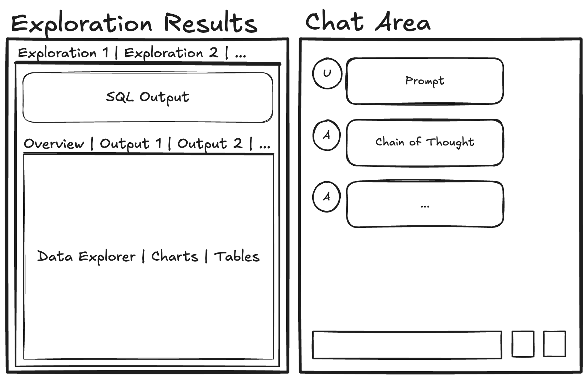

Lumen AI Announcement
What is it?
Today we are extremely excited to announce the public availability of Lumen AI. Lumen is a fully open-source and extensible agent based framework for chatting with data and for retrieval augmented generation (RAG). The declarative nature of Lumen’s data model makes it possible for LLMs to easily generate entire data transformation pipelines, visualizations, and other many other types of output. Once generated, the data pipelines and visual output can be easily serialized, making it possible to share them, to continue the analysis in a notebook, and/or build entire dashboards.
- Generate SQL: Generate data pipelines on top of local or remote files, SQL databases or your data lake.
- Provide context and embeddings: Give Lumen access to your documents to give the LLM the context it needs.
- Visualize your data: Generate everything from charts to powerful data tables or entire dashboards using natural language.
- Inspect, validate and edit results: All LLM outputs can easily be inspected for mistakes, refined, and manually edited if needed.
- Summarize results and key insights: Have the LLM summarize key results and extract important insights.
- Custom analyses, agents and tools: Extend Lumen custom agents, tools, and analyses to generate deep insights tailored to your domain.
Lumen sets itself apart from other agent-based frameworks in that it focuses on being fully open and extensible. With powerful internal primitives for expressing complex data transformations, the LLM can gain insights into your datasets right out of the box, and can be further tailored with custom agents, analyses and tools to empower even non-programmers to perform complex analyses without having to code. The customization makes it possible to generate any type of output, allow the user and the LLM to perform analyses tailored to your domain, and look up additional information and context easily. Since Lumen is built on Panel it can render almost any type of output with little to no effort, ensuring that even the most esoteric usecase is easily possible.
The declarative Lumen data model further sets it apart from other tools, making it easy for LLMs to populate custom components and making it easy for the user to share the results. Entire multi-step data transformation pipelines, whether in SQL or Python, can easily be captured and used to drive custom visualizations, interactive tables and more. Once generated, the declarative nature of the Lumen specification allows them to be shared, reproducing them in a notebook or composing them through a drag-and-drop interface into a dashboard.
{kind=link}
Lumen is a young project and we have a lot of plans to build out the framework further (see the What’s next? section for more details). For now we are just excited to share it with the world and let you try it!
Why did we build it?
It isn’t news that many organizations struggle to derive real insights from their data. This is either because finding and retaining talent is difficult or because there are so many tools out there. When we first created Lumen a few years ago the vision was to build a declarative specification for data transformation pipelines and visualizations specifically tailored to build data applications. The motivation was to make it possible to build templatable dashboards and have a specification that we could target to generate dashboards using a no-code UI, i.e. the user would click through a wizard, connect to pre-defined data sources, specify the visualization they wanted, lay them out on a grid and then deploy them.
The main selling point that would set this solution apart from other similar solutions was that it should be easy to implement custom data sources, transforms and views (i.e. visualizations, BI indicators, tables etc.). While this approach worked, we found it was actually very, very difficult to build a no-code solution that would be intuitive enough for beginners to use while still allowing for the flexibility that is required in real world scenarios - turns out there’s actually a reason why Tableau and PowerBI are as successful as they are despite them being cumbersome to use. So for about a year we put Lumen on the back burner.
In late 2023 the first inkling of the AI/LLM “revolution” (or hype cycle if you prefer) started and we immediately thought of Lumen: “can we teach an LLM to generate a Lumen specification?” Initial attempts at one-shot generation were promising but not particularly convincing. Similarly, early open-source models struggled to provide consistent and high-quality results. Over time as more powerful models were released and an ecosystem of Python libraries for structured output generation emerged, we settled on a basic architecture, which would leverage the existing HoloViz ecosystem for declaring interactive components, the Lumen specification as the structured output format to target, and Instructor for generating that structured output. Since then we have been working on ensuring robustness, extensibility and building an intuitive and powerful UI for performing analyses.
Use Cases
Lumen AI is a generally useful tool that can be adapted and customized for specific use cases by adding custom agents, analyses and tools. However, even without such customization it can be useful for data exploration, writing SQL and generating plots and charts.
Local Data Exploration
In the simple case Lumen AI is an excellent companion for performing some quick data analysis without writing code. E.g. if you want to perform a quick aggregation on some local (or remote) file, just launch Lumen with lumen-ai serve <my-file>.<csv|parquet|xlsx> and generate some SQL queries, download the data, or export the analysis to a notebook to pick it up from there.
Enterprise
The enterprise use case is what we designed Lumen for. We discovered early on that while LLMs are relatively good at writing SQL and generating simple plots, in most enterprise settings you have a ton of documentation and context about different datasets, you are frequently performing very similar analyses, and generating similar reports and charts. Therefore we envision the real value of Lumen AI to be custom deployments which are specifically tailored to a particular domain. To make this a bit more concrete let’s envision a set up where we configure custom data sources, analyses and tools.
Data Sources
Let’s say the company you are working for has a Snowflake database containing all business operation data. Here at Anaconda Snowflake might hold datasets of conda downloads by package, a list of our customers and their subscriptions, results of marketing campaigns and much more. To make this data available to Lumen AI we might configure a SnowflakeSource, set up OAuth using the existing Panel integrations and configure the OAuth provider with the Snowflake authorization server. This allows us to use the access token to authorize with the Snowflake as the user accessing the app, ensuring that Lumen AI only receives the permissions that are granted to the user accessing the app.
source = SnowflakeSource(
account=...,
authenticator='token',
token=pn.state.access_token
)
lmai.ExplorerUI(source).servable()Analyses
Another avenue for customization is the ability to define custom Analysis classes that the LLM can invoke and that can be automatically suggested to the user based on the current context (i.e. depending on the dataset that is currently loaded). As an example, let’s say the user has asked to see the table of conda downloads with detailed breakdowns per package. We can easily implement a custom Analysis that detects the presence of certain column(s) and suggests to the user that they can generate a report of conda downloads over the past month or year. This way we can automatically empower users to generate custom reports and analysis given the current context and also allow the agents to invoke these directly.
A simplified implementation of an Analysis might look like this:
class CondaReport(Analysis):
@classmethod
async def applies(cls, pipeline):
return 'pkg_name' in pipeline.data and 'counts' in pipeline.data
def __call__(self, pipeline):
df = pipeline.data
total = df[df.pkg_name == 'lumen'].counts.sum()
return Column(
'# Lumen Package Report',
Markdown(f"Downloads: {total}")
)Tools & RAG
All companies have vast stores of documentation and metadata but often these are difficult to access and link. Lumen AI makes it easy to integrate custom tools that look up information in different places, e.g. let’s say we want Lumen to be able to link to relevant Jira issues. We can write a simple function:
def jira_lookup(topic: str):
results = jira.search_issues(f'summary ~ "\\[topic\\]"', maxResults=3)
summary = '\n'.join(f'{issue.fields.key}: {result.field.summary}' for result in results)
return summaryComparisons
Agentic AI frameworks are being developed rapidly and standards are only slowly evolving, so building on top of an existing framework would have severely constrained development of Lumen AI. Libraries such as LangGraph, AutoGen, Phi, and CrewAI were just emerging as we were building Lumen AI and to ensure maximum flexibility we decided to begin by building our own architecture and adopt emerging standards as they were widely adopted. There is however another reason that we did not simply build on existing frameworks, and that is because the scope of Lumen AI differs from those other projects, in that the focus of Lumen AI isn’t building a web service but to directly interact with the user, generating rich outputs, having the ability to use forms and other input modalities to interact with the user.
Specifically there were a few requirements we had for our Agent (or rather Actor) architecture:
- We wanted to make the actions of our
Actors as transparent as possible, i.e. the user should be able to inspect, revise and refine the generated outputs and follow along with the reasoning the LLMs used to arrive at those outputs. - An
Actorshould be able to render rich outputs and interact with the user in a richer format that merely chatting back and forth, e.g. ask the user to fill out a form. - Our
Actors are solving complex challenges and we wanted to be able to encapsulate complex pipelines that combine user inputs, data transformations, and LLM calls into a single unit.
These core differences meant that we needed an architecture that would allow us to specify complex prompts, multiple chained prompts, mixed-type outputs, e.g. text and plots, and our agents should be interact with the users using the rich UI features that building on Panel allows. So don’t think of Lumen as yet another agent framework but as a more holistic approach that allows writing agents with rich UI interactions to deliver any kind of output to the user.
As we move forward we will adopt more of the standards that have recently emerged, e.g. the model context protocol, and integrate with popular agent frameworks.
How does it work?
As anyone even vaguely familiar with LLM trends will know, everything now centers around so called AI agents. We strongly recommend reading Anthropic’s recent blog post on “building effective agents” to unpack what defines an agent and how to build an effective one. What is clear is that the exact definition of “agents” is somewhat up in the air, so let’s take it from the horse’s mouth and ask ChatGPT to define AI agents:
An AI agent is an autonomous system that perceives its environment, makes decisions using some form of intelligence or reasoning, and takes actions to achieve specified goals.
So clearly an autonomous system that builds data pipelines, visualizations and dashboards falls under the definition of an agent. In other words our goal in building Lumen AI was to build a so-called agentic system, and since the process of building a data pipeline differs from defining a visualization we would want a set of specialized agents that would co-operate to solve the user’s query. Instead of calling everything an Agent we refer to any component that can perform an action on the user’s (or an LLM’s) behalf an Actor.
Actors
In our design Actors are given a task and then do one of five things:
- They make a plan of action.
- They provide context for other Actors.
- They generate text to either summarize results or provide an indication of progress to the user.
- They generate visual components rendering a rich representation of some data (e.g. a table, plot or visual indicator).
- They perform some action, e.g. sending an email, deploying an app, etc.
We further made distinctions between different kinds of Actors:
Coordinator: As the name indicates this kind ofActorcoordinates the actions of other Actors, i.e. given a user query it makes a plan and then executes that plan by invoking other agents and tools.Agent: TheAgentis then responsible for solving a particular task and responding to a user, e.g. by generating SQL, executing it and rendering the result as a table.Tool: AToolcan be invoked by otherActors to perform some task, e.g. to provide additional context using a Google query or to email out a report.
{kind=link}
LLMs
Without some smarts behind it the Actors are, of course, nothing. In order to allow our Actors to call almost any kind of LLM we added light-weight wrappers around the most common LLM providers and support for local models. During development and evaluation we primarily used OpenAI’s gpt-4o-mini model due to its ideal mix of speed, performance, and cost–it is also the default. While Lumen AI supports Mistral and Anthropic models, and plans to eventually include others from Google, Deepseek, etc., these additional options haven’t yet undergone extensive testing.
In addition to cloud-based solutions, we’ve included llama-cpp-python support. This enables you to run any GGUF model available on Hugging Face—such as Mistral 7B, Qwen 32B, Gemma 7B, or even Llama 70B—depending on your machine’s memory and GPU. A significant advantage of this setup is that these models run locally, ensuring that your input data never leaves your device. Based on our experience, the Qwen2.5-Coder-7B-Instruct model strikes a good balance between local performance and the quality of output and is therefore set as the default when not using cloud providers.
Prompting & Context
In order to provide the context needed for each Actor to perform its task well they define a set of prompts. The prompts consist of jinja2.Templates and pydantic Models, which can reference values in the shared memory, e.g. a summary of the current dataset being accessed. Each Actor can also write to the shared memory to make other Actors aware of the current context. In this way the various Actors can collaboratively fill in details required to answer the user’s query and generate the desired outputs.
UI
All components in Lumen are extensible, including the default ExplorerUI. The ExplorerUI is an entrypoint for Lumen that focuses on the ability to quickly preview some data and then initiate so-called explorations. The goal of the explorations is to either load a table directly or transform it and then optionally generate one or more views to visualize the data in some form. We also wanted a quick way for the user to get an overview of the data, so the default ExplorerUI embeds a GraphicWalker component, building on the newly released panel-graphic-walker extension.

What’s next?
All open-source projects are a work in progress and Lumen AI is no exception. We’re releasing it today because we believe it is already useful as a data exploration tool and to quickly explore large datasets. We also know there’s some way to go in a few respects so we want to be fully transparent in what we expect our next steps to be:
- Rewrite of the UI: Today the Lumen AI UI is built using core Panel. Over the coming weeks we will release panel-material-ui and then rebuild the application on top of it.
- Better Integration with other frameworks: Lumen was developed over a year with rapid progress, iteration and competing standards. As standards are settled upon, e.g. the Model Context Protocol, we want to make sure we support these existing standards and can also leverage tools and agents built using other frameworks.
- Improving the documentation: We know the documentation is currently a little bare-bones. Our main focus over the coming weeks will be to fill the gaps, work up a range of case studies where we create opinionated and highly customized deployments of Lumen AI for specific use cases.
- Validation and Prompt Optimization: We have some internal validation tests for Lumen but they are nowhere close to complete. We will build out the validation suite and then work on a framework for automated prompt optimization with the help of LLMs.
- More Agents & Tools: So far we have primarily focused on the core functions which includes SQL generation and basic plotting using Vega and hvPlot. As we continue building Lumen AI we want to provide a richer set of agents to perform more complex analyses.
- Smarter Planning: The current
Coordinatoractors perform one-shot planning, which works well for simple cases, but complex multi-step analyses will require some more refinement, introspection and more. - End-to-End Dashboard Creation: Since Lumen is built on Panel it is relatively easy to take Lumen generated outputs, arrange them on a grid and deploy the resulting dashboard. Currently this requires a multi-step process involving exporting the analysis as a notebook, launching the drag-and-drop interface on a Jupyter server and then deploying the resulting application. We want this capability to be built directly into Lumen so you can build an end-to-end dashboard or report entirely in the Lumen UI.
Try it out!
We’d love for you to try Lumen out. At its simplest you should be able to run:
pip install "lumen[ai]"Assuming you have configured an OPENAI_API_KEY, MISTRAL_API_KEY or ANTHROPIC_API_KEY you can launch the explorer UI from the commandline with:
lumen-ai serve https://datasets.holoviz.org/windturbines/v1/windturbines.parquet --showwhich will open the UI! Check out Getting Started for more info!
We are really excited to hear your feedback, feature requests and more. So:
- ⭐ Give us a star on GitHub
- 📚 Visit our docs
- 👩💻 File a feature request on GitHub
- 💬 Chat with us on Discord